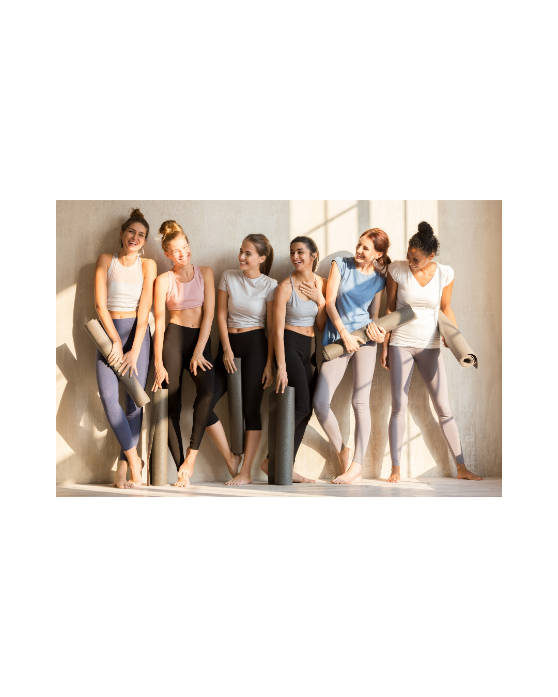
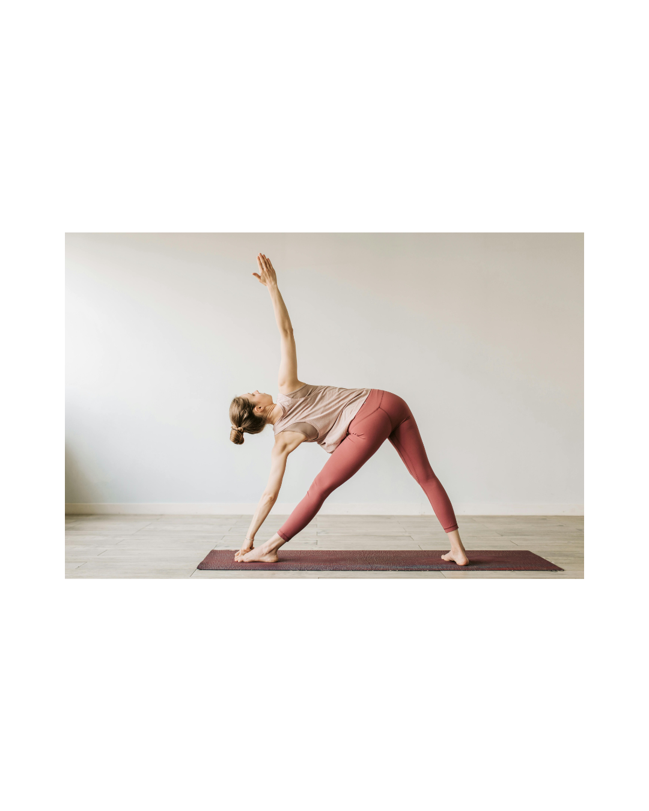
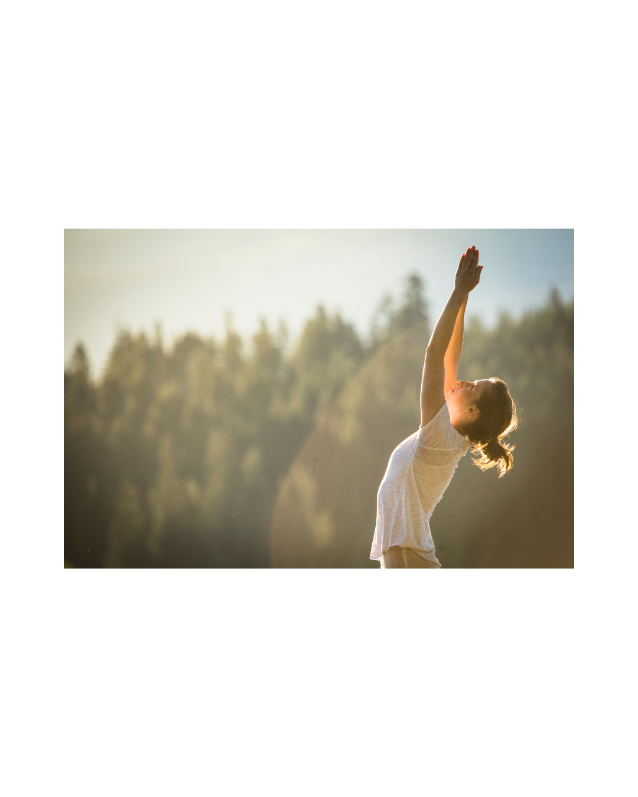
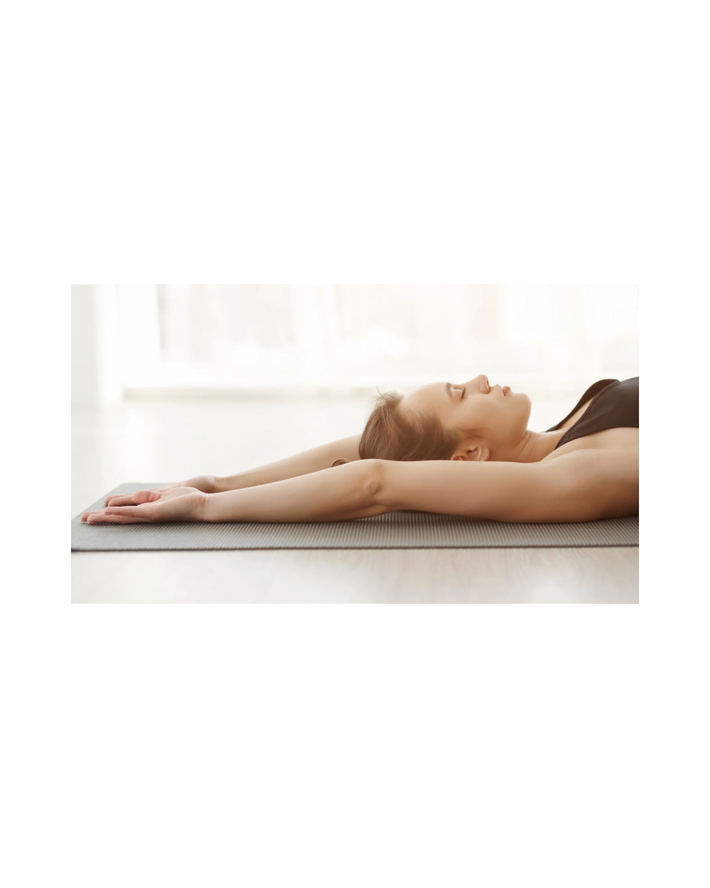
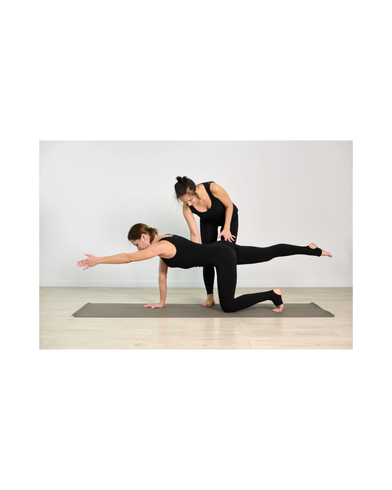
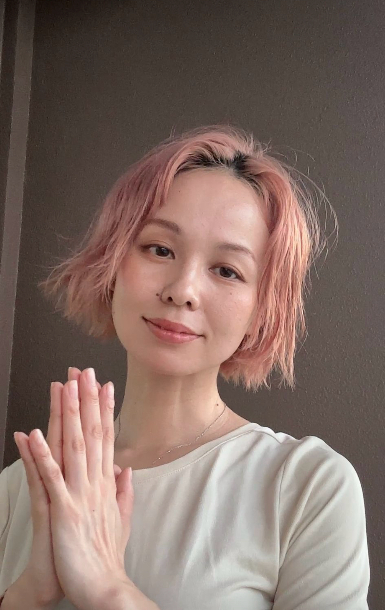

運動だけじゃない、これからのわたしが楽しみになる。
40代からの心と身体に寄り添う 大人の朝活少人数制クラス
女性専門ヨガスタジオ — Ayur Flow 金町
ACCESS
金町駅 徒歩3分
CAPACITY
少人数 8名限定
EQUIPMENT
手ぶらでOK
STYLE
ヨガ・ピラティス

MESSAGE
仕事、家事、育児。女性の毎日は、自分のことを後回しにしてしまうほど慌ただしく過ぎていきます。ふと立ち止まったとき、「なんだかスッキリしない」「昔より疲れやすくなった」と感じることはありませんか？
Ayur Flow（アーユルフロー）金町は、そんな忙しい女性が「自分だけのために過ごす、とっておきの朝時間」を提供する場所です。
午前中に身体を動かすと疲れてしまう気がしますが、実はその反対で程よく動く常温のヨガはかえって午後の活力になっていくんです。シャワー不要でさっと来てさっと帰る身軽さで、その後の時間も有効に使えるのが忙しい女性に人気の理由です。
誰かのためではなく、自分のために。ここから、心地よい1日を始めませんか。
運動不足は感じているのに、ハードに動くのは体がついていかない。疲れているのに、うまく休めない。
以前と比べて体力が落ちた気がする。体型だけでなく、心のバランスも崩しやすくなったと感じる。
毎日忙しくて「自分の時間」は後回し。仕事も家庭も一生懸命なのに、自分のことだけは後まわし。
ホットヨガや大人数のジムは「なんか違う」と感じた。続かなかった理由が環境にあったのかもしれない。
いつまでも好きなことを楽しめる体と心を持ち続けたい。そのための、自分に合った方法を知りたい。
FEATURES & METHOD
日々の暮らしがもっと楽に、もっと心地よく。
4つのこだわりで、あなたの健康やライフスタイルをサポートします。
整える / 浄化
代謝が落ちてくる40代に。呼吸と動きを連動させ流れるように動くことで、全身の血流とエネルギーを巡らせます。関節を温め、冷えや滞りのない身体へ。心身の滞りがぱっと晴れるような「深い浄化感」と「心の余白」を味わえます。
育てる / 土台
体型の変化が気になる世代へ。無理な筋トレではなく、骨盤底筋やインナーマッスルにアプローチ。内側から引き締めることで、更年期の不調や姿勢の崩れを根本からサポートし、一生付き合う身体の「しなやかな土台」を育てます。
安心 / 居場所
仕事や家庭の「役割」を脱ぎ捨てて、ありのままの自分に戻れる場所です。レッスン前後には「話すジャーナリング」や「季節のスパイス白湯」の時間を設け、誰かに感情や思いを話すことで心を軽くするお手伝します。
知る / 一生モノの知恵
インド伝承医学アーユルヴェーダの「リトゥチャリア（季節の過ごし方）」をベースに、今の自分に寄り添います。自分の体質（ドーシャ）を理解することで、なぜ不調が起きるのかを知り、日常のゆらぎを自分で整えられる賢い知恵を学びます。
不安・乾燥・冷えを感じる時に
Grounding & Warmth
ゆっくりと動き、下半身を安定させることで、心を落ち着かせ内側から温めます。
イライラ・ほてり・批判的な時に
Cooling & Release
「吐く息」を意識したねじりで、溜まった過剰な熱を手放し、クールダウンさせます。
重だるい・むくみ・動きたくない時に
Awakening & Flow
胸を大きく開く動きで呼吸を取り込み、滞ったエネルギーを巡らせて活力を灯します。
周りの目を気にすることなく、すっぴんやリラックスした服装で安心してご参加いただけます。
最大8名。お一人おひとりの骨格や柔軟性に合わせて、インストラクターが丁寧にサポートします。
ホットヨガの暑さや息苦しさが苦手な方へ。自然な室温で、自らの筋肉で熱を生み出します。
CLASSES
3つのカテゴリーから、今日の自分に合ったクラスを選べます。
レッスンの前後、心も体調も、もっと上向きに。「話すジャーナリング」と「季節のスパイス白湯」の時間をお楽しみください。

ヴィンヤサフロー／アーユルヴェーダ応用
当スタジオのオリジナルフローヨガです。季節ごとに変化する心身の状態に合わせてメニューを調律。常温のスタジオでもじんわりと汗ばむ運動量で、「代謝アップ」「筋力維持」「ストレス緩和」を一度に叶えます。運動不足の方や体が硬い方でも無理なく動けるよう、丁寧な誘導で行いますのでご安心ください。
※ 当スタジオは女性専用ですが、
このクラスのみ下記の方のご参加を歓迎しています。
・女性会員のご紹介・ご同伴の男性
・概ね小学生以上でひとりで過ごせるお子様（無料）

朝活 / 初心者歓迎 / 45分
「ヨガを始めてみたい」「朝活を習慣にしたい」方の入口に最適な45分クラス。ゆったりとした呼吸と基本的なポーズで、一日を気持ちよくスタートできます。

更年期ケア／リラクゼーション／セルフケア
マッサージボールやブロックを活用して日々の蓄積疲れに優しくアプローチ。血行不良から来る肩こりや腰痛、呼吸の浅さ等、眠りの質の改善を目的とした「寝たままできるやさしい誘導瞑想」付き。心身の不調を整えたいときに。産後ママや育児疲れの方にもおすすめです🌿

40代からのボディメイク／ウェルエイジング
コア（特に骨盤底筋群）・自律神経・痛みやこりの緩和・筋力維持による代謝機能向上・姿勢改善を目的としたウェルエイジングケアクラス。解剖学に基づいたピラティスのアプローチで、女性に大切なインナーマッスルを無理なく育てます。「鍛える」より「整える」感覚で続けられる、40代以降のボディメイクに。
VOICES
スクロールしてご覧いただけます
PRICING
続けることで、自分を大切にすることが当たり前になる――
そのための価格設定を心がけました。あなたのペースで、無理なく続けてください。
シンプルな料金設定
回数券・月パス・ドロップインから、自分のペースに合った方法を選べます。
手ぶらでOK
さっと来てさっと帰れる身軽さが忙しい方にご好評いただいています。マットレンタル無料！
ベテラン講師が担当
指導歴の長い経験豊富な講師。初めての方でも安心いただけるよう、誠実で親しみやすい応対を心がけています。
LINEで直通
急な欠席や問い合わせなど、細やかなサポートに講師が対応いたします。
GRAND OPEN – APRIL 2026
おひとり様1回限り・4月のみ・どのクラスでもご利用可
3回通っていただき、お気に入りのクラスを見つけてください♪
WEEKLY HABIT
¥2,000 /回 (期限2ヶ月)
BEST CHANGE
¥1,875 /回 (期限4ヶ月)
UNLIMITED
もっともお得に通えるプラン
月8回来ると ¥1,625/回
※同日追加受講は空きがある場合のみ、直接講師へご相談ください。
FOR BEGINNER
同日回数券購入でキャッシュバック
DROP-IN
オープン特別価格 (通常¥2,500)
入会金・事務手数料はいただいておりません。価格は全て税込です。
お支払いは現金またはPayPayにて承ります。
オープン特別価格等は予告なく変更・終了する場合がございます。
Q&A
A.はい、全く問題ありません。講師自身も元々身体が硬く、ヘルニア持ちでした。ブロック等の補助具を使って、無理なく心地よいポーズへと導きますので、安心してご参加ください。
A.40代から50代の女性をメインに、30代からシニア世代まで幅広くお越しいただいています。更年期のゆらぎや身体の変化を感じ始めた同世代の方が多く、落ち着いた雰囲気です。
A.動きやすい服装とお水、汗拭きタオルをお持ちください。ヨガマットや補助具は無料で完備しておりますので、お仕事帰りなど手ぶらでお越しいただけます。着替えスペースもあります。
A.いいえ、入会金・年会費・事務手数料は一切ございません。ライフスタイルに合わせて回数券や月パスをお選びください。
A.体質改善や習慣化を目指すなら、まずは週1回から。より変化を実感したい方は週2回をおすすめしています。
A.当教室は常温ヨガです。外から熱するのではなく、呼吸と動きで内側から代謝を上げます。また少人数制のため、お一人ずつの身体の悩みに合わせた細かい指導ができるのが大きな特徴です。
INSTRUCTOR

Ayur Flow Yoga 代表
ヨガ・ピラティスインストラクター
アーユルヴェーダセラピスト
保有資格
・RYT200
・ヨガニードラセラピスト
・ピラティス
・アーユルヴェーダセラピスト
・レイキ / ヒプノセラピー 他
芸術系大学を卒業後、アパレル企業に就職。店舗スタッフ、店長を経てエリアマネージャーとして営業管理、人材育成に貢献。働く仲間をまず大切にすることをモットーに売り上げを伸ばし、アジア優秀店舗賞に選出。
やりがいのある仕事の陰で、慢性的な疲労からくる様々な不調に悩まされる。出産後は育児も仕事も「ちゃんとやらなきゃ」と一人で抱え込み、とうとう心身のバランスを崩し退職に至ったことがヨガとアーユルヴェーダとの出会い。3年弱の療養期間を経てインストラクターへ転身。
スポーツジムでの勤務ののち独立。大手ヨガスタジオ、地域密着のヨガスタジオなど様々な場所で初心者の方から中級者の方へ「自分を大切にするためのヨガ」をお届けしてきました。これまで、延べ6万人の方、約1,000クラスの指導実績。
日々一生懸命誰かのために頑張っている皆さんが、健やかに笑顔で過ごせること・自分を大切にすることを諦めないこと・来るだけで楽しく、癒され、元気になれる明るく穏やかなクラスを心がけています。
ご相談だけでも、お気軽にどうぞ
下のボタンから、スタジオ公式LINEを友だち追加してください。
チャット画面で「体験」と一言だけメッセージを送ってください。
事前入力フォームにご記入いただき、講師より日程確定のご連絡をいたします。当日は15分前を目安にお越しください。